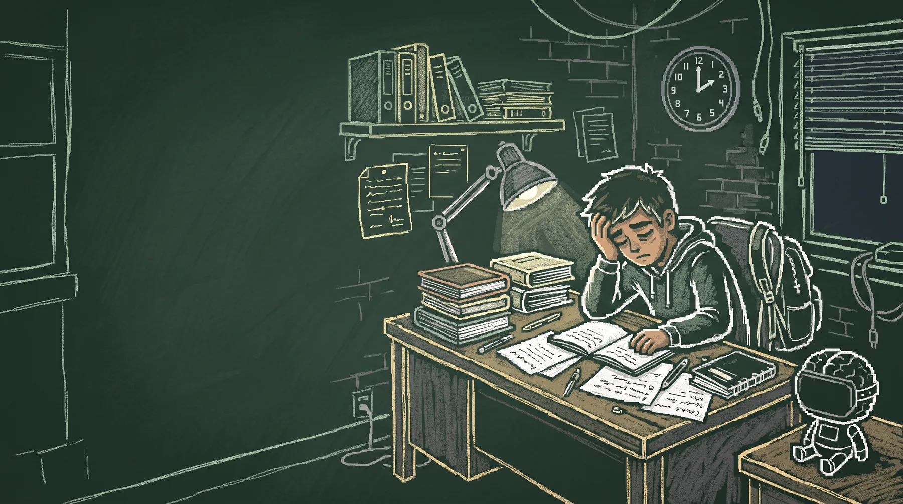
Três anos estudando do jeito que me ensinaram. No quarto, mudei o método e passei em sete vestibulares.
ITA, IME em 23º, EFOMM em 23º, AFA, Escola Naval, EAM em 5º e EEAR em 11º. Tudo no mesmo ano.
A aula 1 é grátis: como descobrir o que a sua prova realmente cobra antes de abrir a apostila.
Chega no seu e-mail. Sem grupo de WhatsApp, sem cartão.
Três anos de apostila, lista e madrugada.
Eu fazia o que bom aluno faz. Lia a teoria, refazia as listas, assistia às aulas de novo. No fim de cada ano a sensação era parecida: eu tinha visto tudo e lembrava de pouco.
- Ano 1Muitas horas. Pouca coisa ficou.
- Ano 2Mais horas. A mesma sensação.
- Ano 3Quase. De novo.
- Ano 4Mudei o método. Sete aprovações.
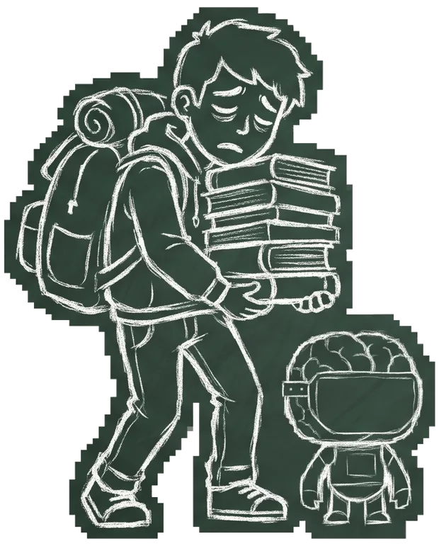
O que sobra do que você estudou na segunda
Só no quarto ano eu entendi para onde iam aquelas horas. Role devagar e veja se a sua semana é parecida.
Segunda-feira você estudou termodinâmica por três horas. Acompanhou cada dedução e fechou o caderno achando que estava dominado.
Entre terça e quinta entraram óptica, polinômios e eletroquímica. Na sexta, sem método, sobra quase nada.
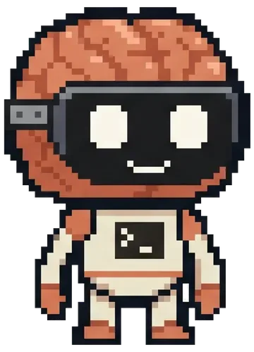
Esforço você já tem. O difícil é saber onde ele vaza.
Reconhecer a página aberta dá sensação de domínio. Na prova, você precisa reconstruir tudo do zero.
O passo a passo do professor faz sentido na hora e esconde a decisão que você teria de tomar sozinho.
A resposta vem limpa e bem formatada em segundos. O cérebro confunde leitura fluida com aprendizado.
Você acerta porque já sabe qual fórmula usar antes de ler o enunciado. Na prova, os assuntos vêm misturados.
Mais abaixo tem uma pergunta de 30 segundos sobre isso. Responda antes de ler a explicação.
A sua mesa de estudo hoje.
Você tem material bom demais. O problema é que cada um puxa para um lado e nenhum conversa com o outro.
O cursinho avança em linha reta. A prova cobra em espiral: mistura capítulos, exige base antiga e pune quem decorou caso particular.
Você mantém seus livros, suas listas e seu Anki. O Spiral liga tudo num ciclo só, guiado pelo que você erra.
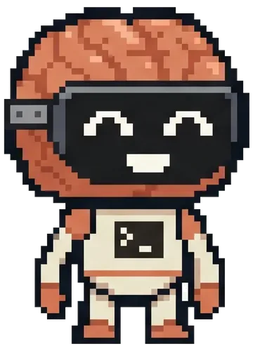
SpiralSeus materiais ligados por um diagnóstico do que você erra.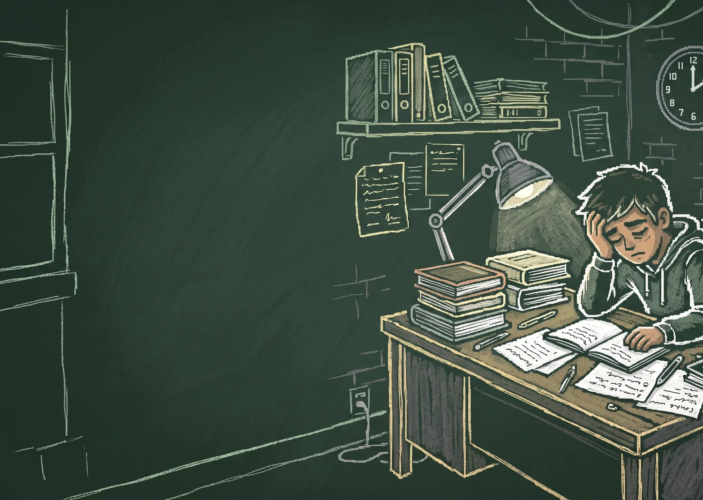
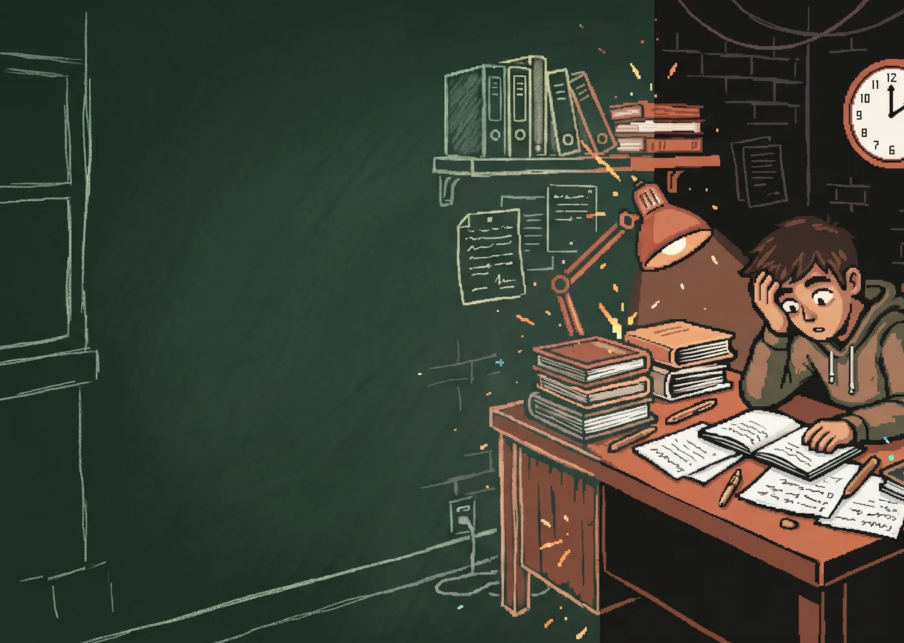
A virada.
No ano passado, a IA deixou de ser um chat para tirar dúvida.
Virou o meu material de estudo inteiro: um professor que acompanhava o meu nível em cada assunto, montado em cima da ciência da aprendizagem e das provas do ITA e do IME.
Sete aprovações em um ano.
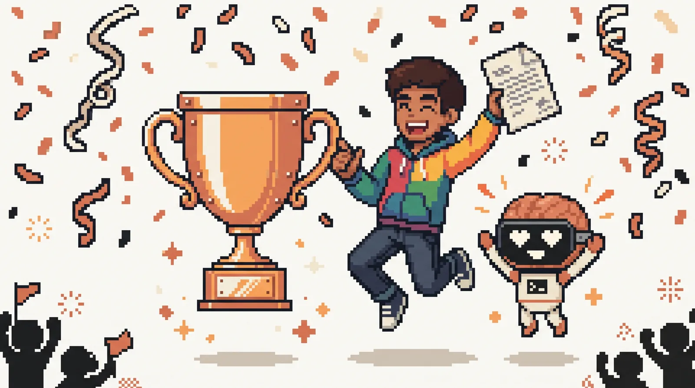
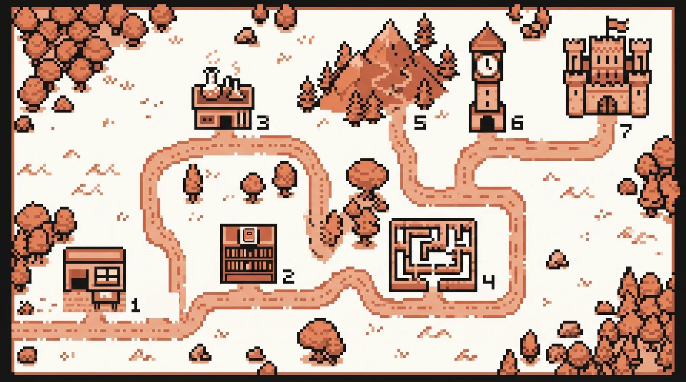
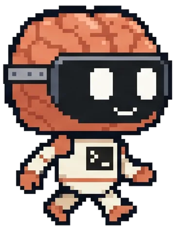
Sete princípios, sete módulos.
Para cada princípio de estudo, como a IA multiplica o efeito. Dez horas no total, dentro do seu Claude, do primeiro dia até a semana da prova.
- 1Onde está a nota aula grátisO que a banca cobra e onde você acha que sabe, mas erra.
- 2Ligar os pontosA estrutura por trás das fórmulas, para não decorar caso por caso.
- 3Lembrar sem olharTirar a matéria da cabeça no papel, sem resumo nem gabarito.
- 4O erro que ficaDescobrir por que você travou, para não errar igual duas vezes.
- 5Misturar de propósitoSaber por onde começar quando a questão junta três capítulos.
- 6Na hora certaRevisar no ponto exato em que a memória ia cair.
- 7Sem redeVocê, a folha de rascunho, o relógio e nenhuma IA.
Todo módulo segue o mesmo caminho, em quatro partes.
Duas ficam abertas aqui. As outras duas, onde está o como, são liberadas só para a turma. Tudo aplicado à matéria que você já está estudando nesta semana.
A ciência por trás daquela etapa e por que o estudo intuitivo falha ali.
Um treino curto no papel, cronometrado e sem tela, para medir se o ganho ficou em você.
Por que Spiral: em vez de ver cada assunto uma vez e só reencontrá-lo na revisão final, você volta a ele várias vezes. Cada volta mais funda, mais misturada com o resto e com menos ajuda.
Em cada assunto, a IA vai saindo de cena.
Na prova do ITA e do IME você está sozinho com a caneta. Por isso, quando um assunto é novo, a IA entra forte para estruturar a matéria. Conforme você domina, ela recua, até sumir. No módulo 7, ela já não está mais lá.
Gráfico: a participação da IA cai etapa por etapa dentro de cada assunto. Começa alta no primeiro contato, diminui na estrutura, na recuperação sem olhar, nos erros, na mistura de assuntos e na revisão, e chega a quase zero na prova.
Responda antes de continuar lendo.
Você tem três horas hoje para estudar um assunto novo de termodinâmica para o IME. O que te faz acertar mais questões desse assunto num simulado daqui a 30 dias?
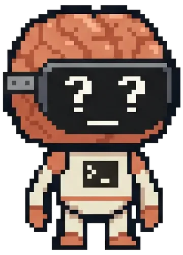
Como fazer isso com a IA, assunto por assunto, está nos módulos 2 e 3.
Receber a aula 1 grátisPara quem é
Escrevi este curso para quem está no segundo, terceiro ou quarto ano tentando ITA, IME, AFA, EFOMM, Escola Naval, EEAR ou EAM, e já estuda mais horas do que consegue aproveitar.
Se você quer que a IA estude por você, ele não vai servir.
A IA não erra conta e inventa física em questão de ITA e IME?
Erra, e com uma formatação tão bonita que engana. Por isso, no curso, ela não resolve questão por você nem substitui o gabarito ou o livro. Cada módulo mostra exatamente onde ela atrapalha.
Preciso pagar alguma IA?
Sim. O curso acontece dentro do Claude, com um agente personalizado, e isso exige um plano pago. Na versão gratuita ele não funciona como deveria.
Preciso saber programar?
Não. Eu montei tudo no Claude Code, mas você só conversa com o agente, como em qualquer chat.
Quanto tempo o curso toma?
Dez horas no total. E você não para de estudar para fazer o curso: tudo é aplicado na matéria que você já está estudando.
Já uso Anki e faço muita lista. O que muda?
O Anki guarda peças soltas, e lista em bloco treina imitação de um capítulo só. A segunda fase cobra a ligação entre as peças, em questões que você nunca viu. O Spiral entra entre o seu livro, a sua lista e o seu Anki para atacar justamente isso.
Você passou no quarto ano. Não foi só a bagagem dos três primeiros?
Os três primeiros anos me deram base, sem dúvida. Mas muita gente tem a mesma base e continua batendo na trave, porque o que estuda vaza ou trava na hora de juntar matérias. O curso entrega o que mudou no quarto ano, para você aplicar desde já.
Faço cursinho. Vou ter que mudar a minha rotina?
Não. O seu professor continua sendo quem constrói a sua base. O Spiral entra nas horas em que você está sozinho, decidindo o que fazer com as listas e com os erros do último simulado.
Serve para a segunda fase discursiva?
Serve. A segunda fase cobra raciocínio montado do zero, no papel e sem consulta, e é exatamente essa condição que o módulo 7 treina.
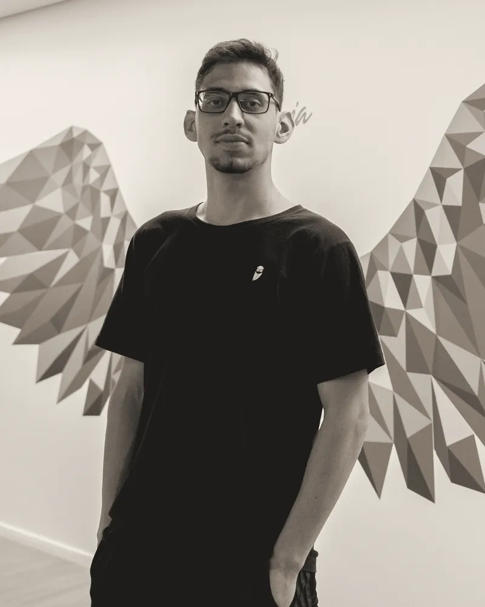
Uma carta de Thalles Moura
Oi. Eu sou o Thalles.
Passei quatro anos estudando para os vestibulares militares e de engenharia. Em três deles o resultado não veio, e não foi por falta de hora sentado na cadeira.
No quarto ano, a IA deixou de ser um chat para tirar dúvida e virou o meu material de estudo inteiro: um professor que acompanhava o meu nível em cada assunto. Naquele ano vieram sete aprovações, entre elas o 23º lugar no IME e a vaga no ITA, onde estudo hoje.
Este curso coloca esse professor dentro do seu Claude. Sem promessa de atalho: você vai continuar estudando muito. Só que agora o estudo vai ficar.
Thalles
- ITA
- IME 23º
- EFOMM 23º
- EAM 5º
- EEAR 11º
- AFA
- Escola Naval
- OBMEP
- OBF
Depois que você deixa o e-mail
- A aula 1 chega no seu e-mail“Onde está a nota”: como descobrir o que a sua prova realmente cobra antes de abrir a apostila.
- Você aplica no seu Claude, nesta semanaEm cima da matéria que você já está estudando. Sem compromisso de compra.
- Quando a turma abrir, você fica sabendo antesQuem está na lista recebe o aviso primeiro.
Você leu até aqui. Falta um e-mail.
Na aula 1 você vê por que estudar na ordem do sumário é o caminho mais lento para subir nota nas provas militares.
Um e-mail por aula. Sem grupo de WhatsApp, sem spam.